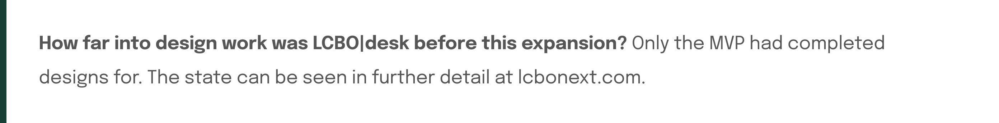
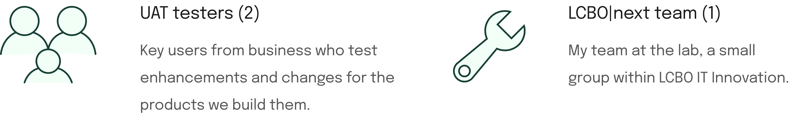
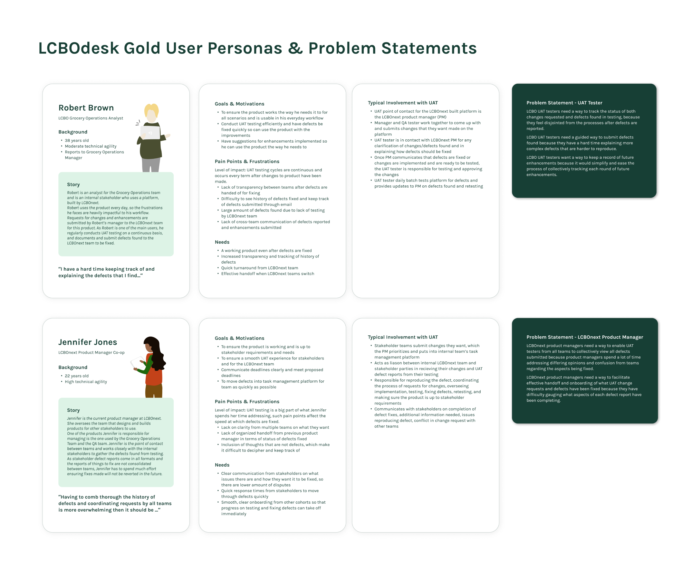
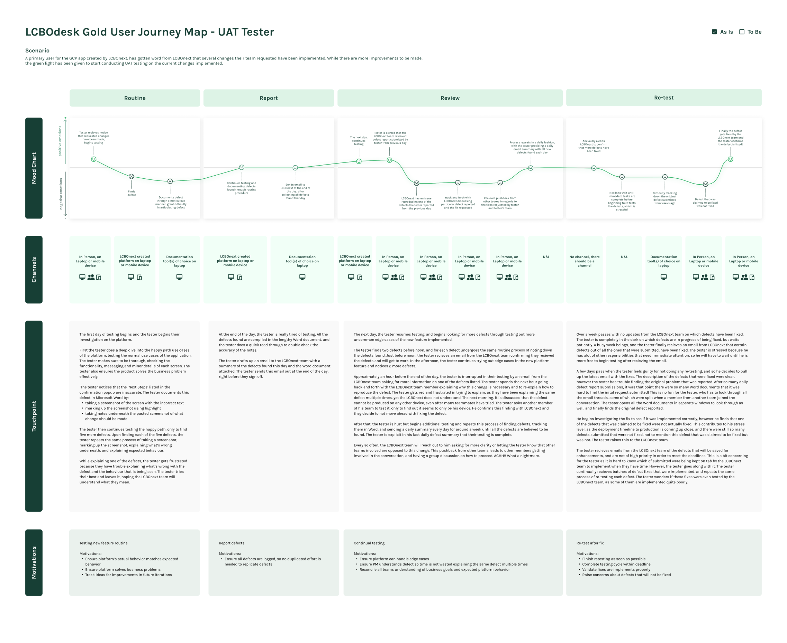
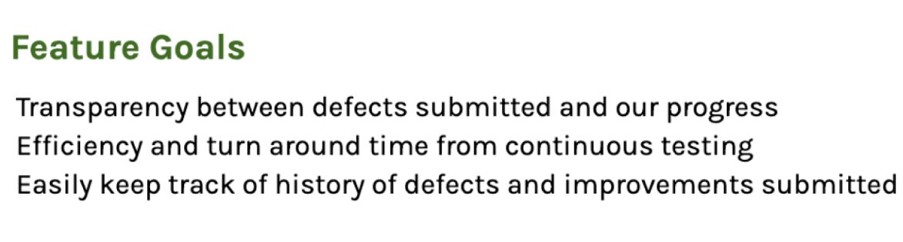
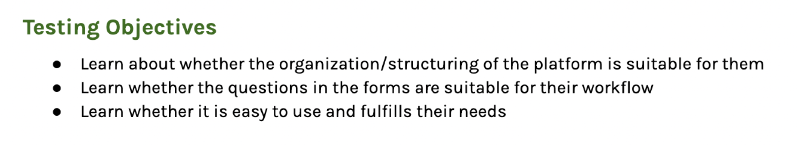
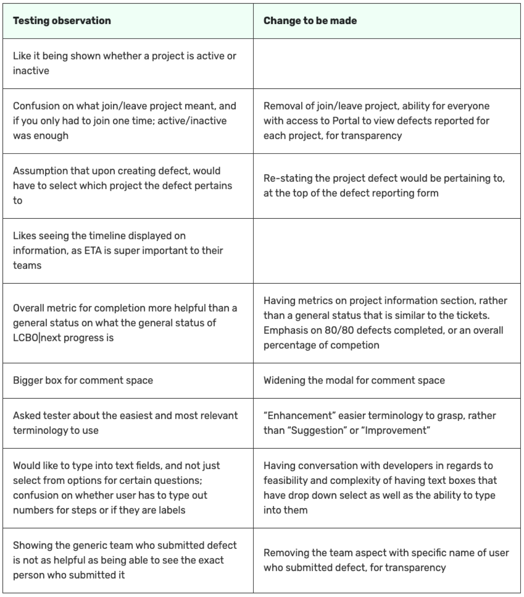
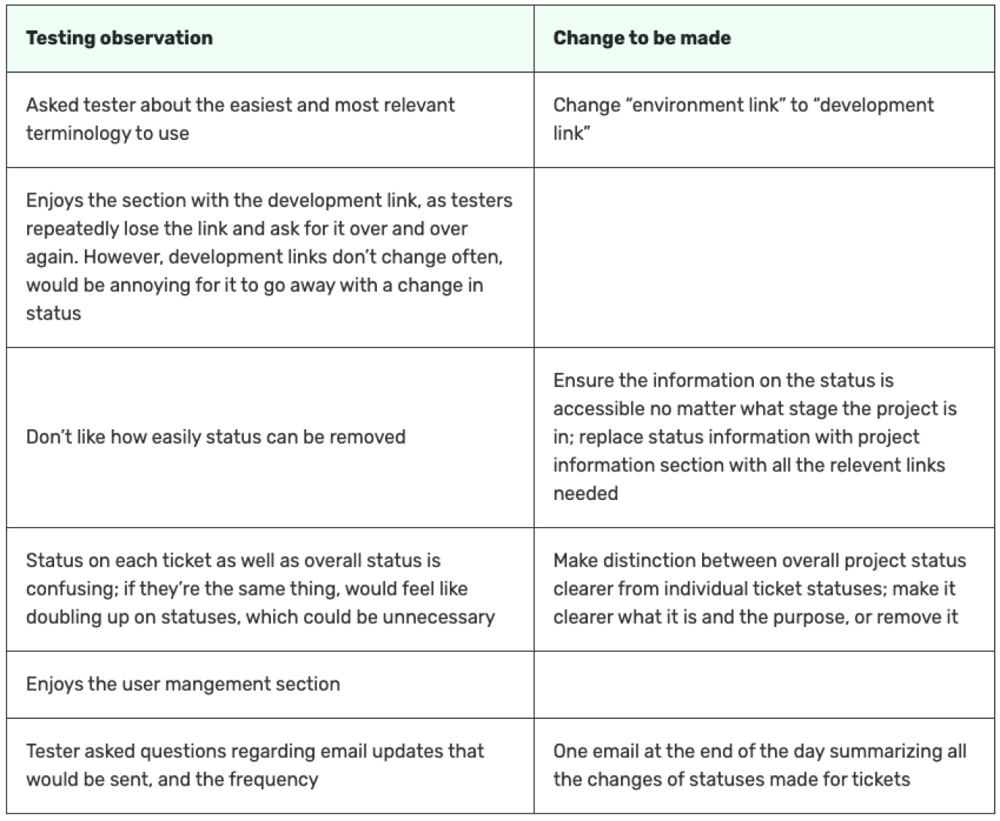

Simplifying the feedback cycle with a defect reporting platform
Expanding an LCBO|next platform to address the challenges of user acceptance testing.
Skills
Scoping
User research
Interaction design
Visual design
Organization
LCBO|next
Timeline
Nov-Dec 2021
Team
Sole UX/UI designer
1 product manager
2 developers
The goal
Simplifying the user acceptance testing process
LCBO|next services many parties with the internal tools we create. LCBO|desk was a project started with the goal of provide users of LCBO|next products a means to streamline the way they receive help, through streamlining feedback through a widget into a helpdesk portal.

The project
Building a custom defect reporting platform
How might we expand LCBO|desk to help make the user acceptance testing process quicker, more organized, and easier for all parties involved?
User research
01: User interviews
3 user interviews were conducted with the following stakeholders.


02: Affinity mapping & key insights
Define
03: Personas & problem statements
During the UAT testing process, the UAT testers mainly face issues around defect reporting and explaining/viewing status of defects, while PMs struggle more with communication and organization between teams, as well as term to term handoff.
04: User journeys
Ideation
05: Solidifying the solution concept
HMW alleviate each problem statement? Addressed each pain point, to ideate features which form the solution concept.
06: User flows
Wireframing and prototyping
07: Making design decisions
UAT tester view
LCBO|next admin view
08: Hi-fidelity designs
UAT tester portal
Expanded LCBO|desk admin portal
09: Usability testing findings

UAT tester usability testing findings
LCBO|next admin testing findings
Leaving off: applying changes from testing
Reflection
Leading more of the product work
Writing product documentation was a new experience for me. I wrote an addendum and all the user interview/testing documentation on my own, which was interesting!
Keeping version history was another key learning and very important to the longevity of the project, especially as multiple designers have and will continue to touch this project.